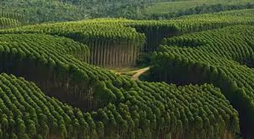

O papel é fabricado a partir da celulose, que pode ser obtida de ávores, plantas ou reciclado de
papel já utilizado. A celulose é utilizada com produtos químicos para remover impurezas e
branqueá-la. Em seguida, ela é transformada em processo de secagem rm ums maquina chamada
de papelão.
A produção se dá atraves de vários processos, podendo eles seres contínuos ou em batelada, integrando
diversas áreas diferentes. Ele é feito a partir de troncos de madeiras que passam por diversas etapas
produtivas até que chegue nas mãos das pessoas.
A consequência disso é o derrubamento em massas de árvores, e esse desmatamento causado
para produzir papel é uma grande ameaça para o meio ambiente.
A produção de papel afeta tanto o meio ambiente quanto seus resultados. De fato, 40% da extração industrial
de madeira do mundo vai para a fabricação de papel.
Cada folha de papel vem com o imposto oculto de poluição da água e do ar, emissões de gases de efeito
estufa e subprodutos tóxicos do processo de branqueamento. Em todas as fases, o papel tem um impacto
negativo no ambiente.
O papel tem vantagem por ser um material renovavel e biodegradável (sacola, caixas envelopes). Mas é
importante considerar suas desvantagens em relação ao uso de recursos naturais e impacto ambiental
negativo.
Sendo assim, apesar de tudo a produção de papel tem um impacto ambiental negativo, principalmente
quando os produtores não são responsaveis,e não realizam praticas mais sustentaveis. Assim acarretando
a poluição atmosferica, o aquecimento global, entre outros. E por consequecia afetando as cidades.
Para as cidades a produção de papel é importantíssima, considerando que o papel esta presente na vida
de todos, no trabalho, em casa, na escola e em quase todos os lugares frequentados. Porém é
necessario distacar os seus efeitos na contribuiçao do aquecimento global
{kind=link}